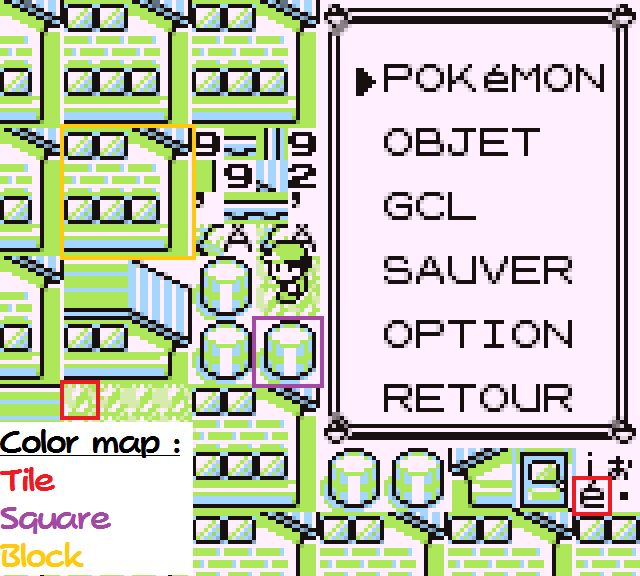

Taking The April Fools Very Seriously
"Hey dude, there's been a nice challenge released for April Fools ! It's based off hacking Pokémon Blue, and it's super cool !"
"That's all ?"
"No ! When you finish, it gives you a code you enter at zzazzdzz.github.io/fools2017/ and it registers a score !!"
"Ooh, nice !"
"There's even achievements, one of them supposedly cannot be obtained through normal means
.
Normal reaction :
"Wow dude, let's play this !"
Better reaction :
"Okay. LET'S GET THIS ACHIEVEMENT."
(Spoiler : I had the second)
Trivia
Skip this if you want. It's just some context.
We all in the Pokémon glitching community have a tradition on April the 1st.
At least the three "major" YouTubers in the community : TheZZAZZGlitch, Torchickens / ChickasaurusGL, and Crystal_
The first one that says "Verlisify" gets instant death. All others too.
Crystal_ recorded on their GBA Gold being called by Rick Astley who performed a song never heard before.
The April Fools was that it obviously was Youngster Joey.
Torchickens presented a video of a cool beta secret, namely an access to the famed Could City (yup).
This time the joke was that it was an alpha secret. Or maybe gamma, I'm not sure.
TheZZAZZGlitch found a way to cure cancer, make pizza and coffee, using Pokémon Blue ACE. He offered a download link to the save file if we wanted to try this ourselves.
However Missingno. wanted revenge from his defeat last year, and inserted himself into the save file.
Sorry to all cancerous people, we have lost a way to cure you all. Blame Missingno.
The Game
The game is a fully normal Pokémon Blue. Then what's the deal ? It's the save file.
As soon as you load it, you are unable to move, and Missingno. (I suppose) welcomes us... and corrupts the map to block us !
The challenge is to use cheating to complete the game. You have to ; there's really no way to complete the game legit.
At the end of the game, you are given a password that you place here : zzazzdzz.github.io/fools2017/.
This saves your completion time as well as a few achievements. This also allows you to enter a small message that will be displayed in the results video (not published yet).
The page is a leaderboard, that lists the 50 best scores. All other scores are saved but not displayed.
A few details :
Achievements are kept between playthroughs, meaning it's possible to play slowly and get achievements, and then play fast but don't care about achievements.
The game has an anti-timer cheating protection. Obviously you can bypass it.
I didn't reverse engineer the timer code, but it appeared that the in-game time at the end of the Hall of Fame sequence doesn't always match up with the run's time.
My best guess is that the timer keeps running a bit after the HoF sequence starts.
Also, it isn't possible to use the same code twice. We will see how to bypass this later.
Getting scores
This section focuses on getting points, by first getting achievements, and then completing the game as fast as possible.
I recommend using the emulator BGB for its powerful debugging utilities. It helps for most of the stuff listed here, but I agree that it's not user-friendly the first time you see it.
First playthrough
This section's goal is simply to complete the game using the most "intended" path.
The first room is easy to traverse ; Missingno. hints you at using a WTW cheat. REALLY easy one, bub.
The second room can be traversed by setting your money to 999999 (the cheat is also famous) and talking to the guard.
You then need to use the item RIVAL's while facing down, go through the blockade while invisible, and then open your Pokemon menu. Then walk.
Next is real easy. Talk to Bruno, set Missingno.'s HP to zero, set the opponent's speed to something low (or just attack, he seems to miss a lot), and use Splash. Pow, ded.
Some friends told me they used the "run away" cheat. That also works, but "top percentage" cannot be unlocked if you run away.
Get 4F from Bruno, and go to the next room. You have to alternate the second entry between both values and move around. Note that if you complete the puzzle without pressing up, that's a free achievement.
The next room, just give yourself a Chansey (look up the Big HEX List for the argument). Done !
The last room's puzzle is the simplest : use ClearSAV through 4F. Watch the Hall of Fame sequence and grab your code !
Achievements
I'm good on my own
This one is one of the easiest. All you have to do is exit the second room without using any items. There are many ways to do this, one of them is in the "speedrunning" section.
Top percentage
This one is probably the easiest of all. Giving your Magikarp 255 EXP before the Bruno fight (or actually before fainting the opposing Missingno.). It should level up to level 10. Don't thank me, no need.
0x Up Presses
In the room where you have to change the map with 4F, just never press Up except in menus. It's really easy to do, and again, the speedrunning section's path doesn't require up.
Guard skip
Same, see the speedrunning part.
Pokédex flags are weird
The easiest way to get this one is to mark a Pokemon as seen but not owned.
This achivement has programmed a bit lazily, and all that's really required is to have a different number of owned and seen Pokemon.
An easy way to get it is to GivePokemon with ID 00. It will mark Cubone as seen, but no Pokemon as caught.
Gullible
I didn't get how this one is performed yet. All I know is that in the dark room, you just need to use 4F to change the TileBlockPtr to any other value, then walk right and past all messages.
Yeniaul told me that doing ~16 steps right would work, but that didn't always count the achievement.
31337
See the detailed part below, it's a really convoluted one to get.
Well tbh, it's really easy to get. Once you figured out why you can't even through heavy cheating.
Gotta go fast !
Or : how to make fast times.
This paragraph will document one aspect of the Gen I engine : the map engine.
My goal here isn't to fully describe it, but to describe how it has to be manipulated for our purposes.
We'll start with something extremely simple : map data is taken from RAM. This is how the game usually applies changes (such as the stairs appearing in the Game Corner), and how Missingno. traps us everytime.
For this purpose, there exists a variable that's sometimes called Event Displacement (probably for historical reasons) but that I'll call Map Block Pointer.
The map block pointer is a pointer to a list of blocks (usually in RAM, but the game WILL work fine with it pointing to ROM). What are blocks ?
As you may (or not) know, the Game Boy's renderer, like most of 8-bit and 16-bit consoles', is a tilemapper. Which means you write a piece of graphics, in the GB's case as in most others 8x8 pixels wide (for to technical comfort), then you "assemble" them on-screen.
(You may skip this line) I can tell from my experience (since I'm developing a GB game as I'm writing these lines) that storing these tiles in ROM then copying them to the renderer's memory (VRAM for Video RAM) is very ROM-consuming. Think of it like this : the screen is 18 tiles large and 20 tiles tall ; since one tile is mapped to 1 byte, a screen takes 18 * 20 = 360 bytes of memory. To store a hundred screens (not very much), you'd need to eat up 36 kb of memory.
The largest ROM size the GB can accept is 128 kb ; you'd eat nearly half of it in just screen data. If you then add other map properties, lag caused by copying... storing these 8x8 pixel tiles individually doesn't make sense, also because when Generation I came out this 128 kb technology didn't even exist. And because it would have costed way too much more than a whole lotta bunch of money. Read : too much.
The developers applied a technique fairly common, that is to instead store 2x2 grids of those 8x8 pixel tiles, and store the combinations.
To say it differently, instead of storing separately "here are tiles $4E, $4F, $50 and $51", they stored "here is a tree square" and somewhere else "a tree is tiles $4E, $4F, $50 and $51". It makes sense, AND saves a lot of RAM. Definitely a good idea. Those 16x16 "squares" (I'll keep this term from now onwards, but keep in mind the terminology is a bit floaty and "tiles" may be used to refer to 8x8 physical units as well as 16x16 or 32x32 logical units, pay attention to the context) are the smallest logic unit (the player walks on a 16x16 pixel grid, the game redraws the map by rows or columns 16 pixels thick, etc.).
However, Gen I's devs pushed the logic one step further : instead of storing these squares independently, they applied the same logic to them and created 2x2 "blocks" of squares. If you followed, you understood that a "block" is 32x32 pixels. If you didn't, here is an image :

Fig. 1 : examples taken from French Gen I. This doesn't depend on the version, though.
Now you'll understand why the map is arranged like that when you go out of bounds. This may also strike a chord for those familiar with Glitch City RAM Manipulation.
Now, what is that Map Block Pointer variable I talked about a bunch of lines above ? It's a pointer to where the game will read the map blocks from.
Bear this in mind through this section, which will describe the other part of map data : coordinates.
The game has an X and a Y coordinate. The Y axis is the vertical axis, and the Y coordinate increases as you go down. The X coordinate increases as you go right.
Now, what are each of the elements used for ? It's there that it becomes weird : some of you might think that the Map Block Pointer is a base pointer, and the source pointer is calculated using the coordinates, but nope !
As with many elements of Gen I, there is redundancy. And this one gets annoying when hacking map data. Because the Map Block Pointer is used for "background" collision and display, but the coordinates are used for sprite and warp interaction, and transitioning between maps.
tl;dr : modifying your coordinates will move you, but the background and its collision will move with you. Yay !
So, how to fully move you somewhere ? You have to change your coordinates then fiddle a bit with the Map Block Pointer so it becomes right.
Also woth noting is that the pointer is only changed once every two steps, and there are two variables tracking your position within your current block.
This technique is cool but slow and it's complicated. Even I am getting lost in this explanation at this point. So I'll introduce you to another, better, technique.
FASTER MENNER
To go faster, you need to think outside the box. You'll stay within the imposed box (generating a correct password then submitting it), of course, but there are different-sized boxes.
Let's rant a bit about them.
The smallest box is using the easy methods, taking the easy path, dong what the game hints you at doing. For example using WTW in the first room, then buying RIVAL's, etc.
This is the most "intended" method of solving all the puzzles ; it yields a time I'll be talking about as "below average" (don't question it, darnit !) and can at most give you 4 achievements if you try.
This is not our goal here. Our goal is to escape that box : since we're "allowed" to use direct RAM manipulation, let's use it for heavier physics manipulation.
The above section's goal was getting outside of this box : instead of using the D-Pad to go to the desired location, let's just "be" there without moving. But by doing this, you stay inside another box :
You keep the principle of "I must go to the goal".
WHAT IF... Fox's lasers were Falcon Punches we moved the goal to us ?
Sounds a lot more interesting, huh ? And it's much simpler than manipulating your position. Aww yea.
Now introducing... Warp Displacement.
First of all, let's talk about warps. Warps are stored, in this game, as an array of 4-byte entries.
struct Warp {
unsigned char YCoord;
unsigned char XCoord;
unsigned char DestWarpPoint;
unsigned char DestWarpMap;
}
I think YCoord and XCoord are pretty self-explanatory.
DestWarpMap is the ID of map the warp points to. $FF is a bit special...
Keygen
Here.